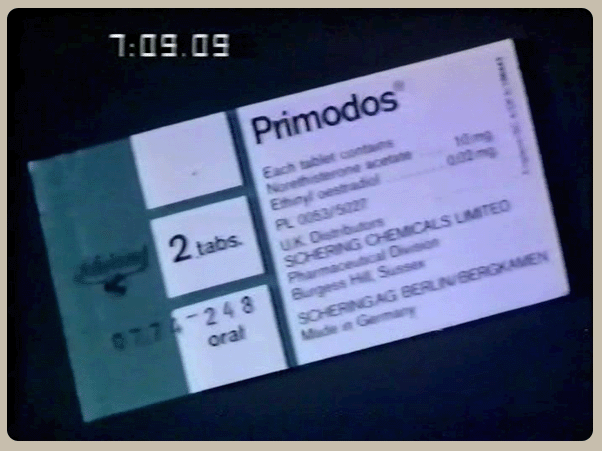
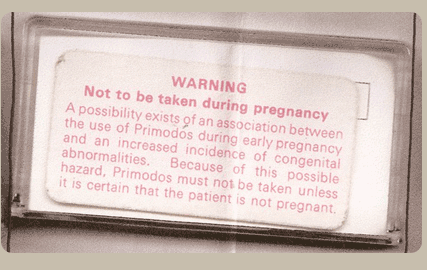

"It is somewhat difficult to summon up enough enthusiasm to place a high priority on this, when so much other and possibly more important work is pressing."
"With regard to the rather high incidence of abortions in the Primodos group, I think it must be born in mind that women going to their doctor for this type of test often hope that they are not pregnant and it is not impossible that these women took other steps to terminate their pregnancies".
"In view of these findings tentative though they are, it would be my own view that, since there is in any event no very sound medical reason (in my opinion) for the use of such Hormonal preparations, Primodos should be withdrawn from use."
"(A) The test is unreliable"
"(B) It may well be dangerous in that it could possibly precipitate abortion in a not well established pregnancy."
"An apparent connection between congenital malformations and the application of hormonal pregnancy tests. It looks, in fact, as if this could be another Thalidomide story."


Why did we use a Hormone Pregnancy Test?
Our doctors gave it to us
What were we thinking?
We didn't think, we trusted
Who did we trust?
Our own Doctor and The Committee on Safety of Medicines
Who are they?
The Authority formed after the Thalidomide Disaster to ensure it never happened again
What about the Drug Company responsibility?
The Drug Company took their responsibilities very seriously - The serious responsibility for making huge profits
Didn't they ensure that the drug was fully tested and safe?
They have no conclusive data on the safety of the drug, in pregnancy
Did the Committee and the Drug Company know there were serious concerns?
The Committee on Safety of Medicines and the Drug Company deliberately ignored warnings of Adverse Reactions for at least 8 years. We believe this delay may have cost the lives of thousands of babies and left many more with dreadful disabilities